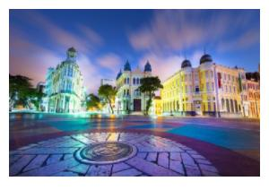

Um pouco sobre Recife

Recife é um município brasileiro, capital do estado de Pernambuco, localizado na Região Nordeste do país. Com área territorial de aproximadamente 218 km², é formado por uma planície aluvial, tendo as ilhas, penínsulas e manguezais como suas principais características geográficas.Cidade nordestina com o melhor Índice de Desenvolvimento Humano (IDH-M), o Recife é a quarta capital brasileira na hierarquia da gestão federal, após Brasília, Rio de Janeiro e São Paulo, e possui o quarto aglomerado urbano mais populoso do Brasil, com 4 milhões de habitantes em 2017, superado apenas pelas concentrações urbanas de São Paulo, Rio de Janeiro e Belo Horizonte.A capital pernambucana tem, num raio de 300 km, três capitais estaduais sob sua influência direta: João Pessoa (122 km), Maceió (257 km) e Natal (286 km).
Praia de Boa Viagem

A Praia de Boa Viagem é a praia urbana mais famosa da cidade do Recife, capital do estado brasileiro de Pernambuco. Com aproximadamente oito quilômetros (8 km) de extensão, está situada no bairro homônimo, Zona Sul da capital pernambucana, delimitada pela Praia do Pina ao norte e pela Praia de Piedade ao sul.
A maior parte da Praia de Boa Viagem é protegida por uma barreira de recifes naturais, que deu nome à cidade.
Todos os direitos reservados.